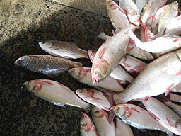
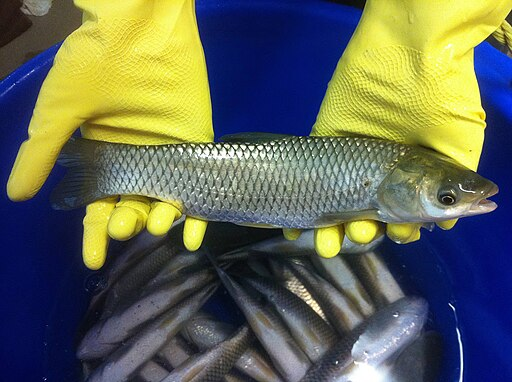
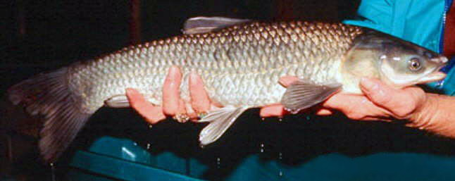
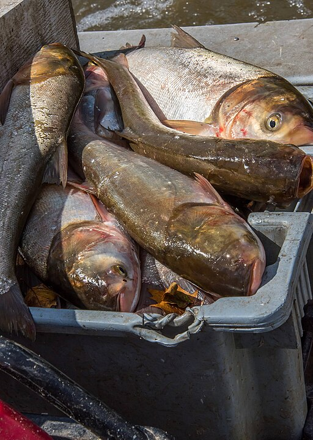
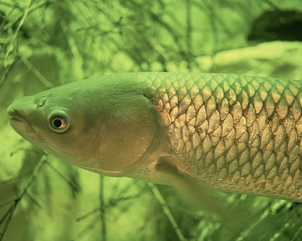

Image credit: "Silver carp jumping" by Ryan Hagerty/USFWS - Public Domain. Retrieved from U.S Fish and Wildlife Service, fws.gov
What is Asian Carp?
Asian carp can refer to the types of fish found in Asia. In North America, Asian carp can refer to the bighead or silver carp in North America (New York Invasive Species Information, 2019). Black carp and grass carp can also be considered Asian carp, as they are native to Asia ("Invasive Carp | National Invasive Species Information Center", n.d.).
The bighead, grass, black and silver carp are all invasive to the US as identified by the USDA ("Invasive Carp | National Invasive Species Information Center", n.d.). These species may also be called invasive carp (Biological Threats and Invasive Species Research Program, 2022).
Throughout this page, "Asian carp" will refer to the species of carp that were originally native to Asia but may have invaded the United States. More specifically, we refer to the bighead, grass, black and silver carp.
Asian carp are primarily invasive because of these key factors.
- They have been found in places outside of their native areas ("Invasive Carp | National Invasive Species Information Center", n.d.).
- They can grow very fast ("Invasive Carp | National Invasive Species Information Center", n.d.).
- Their populations can also grow very fast (U.S. Geological Survey, n.d.).
- They have negative effects on our ecosystem (National Park Service, 2023).
- They can outcompete native species ("Invasive Carp | National Invasive Species Information Center", n.d.).
- They have a very big appetite for food (Holmes, 2021).
The Problematic Species
-

Judgefloro, Public domain, via Wikimedia Commons
Bighead Carp
Hypophthalmichthys nobilis ("Bighead Carp | National Invasive Species Information Center", n.d.)
- Averages about 30-40 pounds (New York Invasive Species Information, 2019)
- Dark gray body, that on the underside, fades to white ("Hypophthalmichthys nobilis (Richardson, 1845)"), 2023)
- Dark blotches on side ("Hypophthalmichthys nobilis (Richardson, 1845)"), 2023)
- Lives at up to 20 years (New York Invasive Species Information, 2019)
- Matures at about 7 years (New York Invasive Species Information, 2019)
-

USFWS, Public domain, via Wikimedia Commons
Grass Carp
Ctenopharyngodon idella (Ctenopharyngodon idella (Valenciennes in Cuvier and Valenciennes, 1844), 2020)
- Olive-brown dorsal side ("Ctenopharyngodon idella (Valenciennes in Cuvier and Valenciennes, 1844)", 2020)
- Large, dark scales ("Ctenopharyngodon idella (Valenciennes in Cuvier and Valenciennes, 1844)", 2020)
- White or yellow belly ("California's Invaders: Grass Carp", n.d.)
- Lighter coloration than black carp ("California's Invaders: Grass Carp", n.d.)
-

Leo Nico, (United States Geological Survey)(Zp at cs.wikipedia), Public domain, via Wikimedia Commons. Image credit: U.S. Geological Survey - Department of the Interior/USGS. U.S. Geological Survey/photo by Leo Nico.
Black Carp
Mylopharyngodon piceus ("Black Carp | National Invasive Species Information Center", n.d.)
- Can grow up to a length of 7 feet (New York Invasive Species Information, 2019)
- Large scaled ("Mylopharyngodon piceus (Richardson, 1846)", 2022)
- Typically "brown to black in color" ("Black carp (Mylopharyngodon piceus)", n.d.)
- Have "blue-grey to white bellies" ("Black carp (Mylopharyngodon piceus)", n.d.)
-

USFWS, Public domain, via Wikimedia Commons
Silver Carp
Hypophthalmichthys molitrix ("Silver Carp | National Invasive Species Information Center", n.d.)
- Small, silver scales ("Silver Carp (Hypophthalmichthys molitrix)", n.d.)
- Grayish black/olive green on back ("California's Invaders: Silver Carp", n.d.)
- Up to 3 feet long ("Silver Carp (Hypophthalmichthys molitrix)", n.d.)
- Commonly reaches 20 pounds ("Silver Carp (Hypophthalmichthys molitrix)", n.d.)
- Uniform silver sides ("California's Invaders: Silver Carp", n.d.)
{kind=link}
{kind=link}
{kind=link}
{kind=link}
The Invasion
States with Invasive Carp
Number of states with each invasive carp (grass, bighead, silver, black)
- Grass: 47
- Bighead: 28
- Silver: 25
- Black: 9
Source: U.S. Geological Survey. Data last retrieved November 2023.
Invaded Areas
Asian carp have mostly invaded the Mississippi River ("Invasive Carp | National Invasive Species Information Center", n.d.).. In May 2019, grass carp were reported as a threat to vegetation in 45 states, the highest number of states that a species invasive carp have invaded in the US (New York Invasive Species Information, 2019). However, according to data from the U.S. Geological Survey, this number may have grown up to an estimated 47 states ("Ctenopharyngodon idella (Valenciennes in Cuvier and Valenciennes, 1844)", 2020).
How It Got Here
These species were primarily introduced to stock aquaculture facilities to control species (Biological Threats and Invasive Species Research Program, 2022). Some types of carp may have been brought as part of food markets (U.S. Geological Survey, n.d.).
These types of carp escaped their way out of where they were stocked and found themselves in the Mississippi River, where they invaded ("Invasive Carp | National Invasive Species Information Center", n.d.). Floods may also have played a part in escapement of the Asian carp ("California's Invaders: Bighead Carp", n.d., "California's Invaders: Black Carp", n.d.) Accidential releases can also cause carp to end up in the Mississippi River ("Invasive Carp | National Invasive Species Information Center", n.d.). For example, grass carp was released into Arkansas waterways, and spread to the Arkansas River, and eventually into the Mississippi River drainage ("California's Invaders: Grass Carp", n.d.).
Asian carp can also invade other areas through:
- "Live bait" (w. "young carp") (National Park Service, 2023)
- Watercraft carrying invasive carp (National Park Service, 2023)
- Dispersion throughout open waters ("California's Invaders: Silver Carp", n.d.)
Problems
Image credit: Engbretson, Eric, Public domain, via Wikimedia Commons
{kind=link}
Ecological Problems
- Silver and bighead carp are filter feeders, and eat plankton fairly aggressively (New York Invasive Species Information, 2019). Since native fish need the plankton through their young stages, it can throw off the food web and make it less stable (New York Invasive Species Information, 2019). Bighead carp can be considered to outcompete native fish through this way (New York Invasive Species Information, 2019).
- Black carp can eat native endangered/reintroduced species, putting them at risk (National Park Service, 2023).
- Silver and bighead carp can also outcompete native sport fish ("Invasive carp in Southeastern waters | U.S. Fish & Wildlife Service", n.d.).
- Can dominate streams and push out species (National Park Service, 2023).
- Black carp can consume mussels, which can improve water quality ("Invasive carp in Southeastern waters | U.S. Fish & Wildlife Service", n.d.). Removing these mussels through the introduction of black carp can decrease water quality.
- Asian carp makes up 95% of the biomass in the Mississippi and Illinois River systems (New York Invasive Species Information, 2019).
- Any remaining plants that grass carp do not eat will get into the water, which can create algal blooms, and this reduces water clarity and oxygen (Holmes, 2021).
- Grass carp can carry Asian tapeworms ("California's Invaders: Grass Carp", n.d.).
- Grass carp can impact spawning habitats when they disturb water during feeding ("California's Invaders: Grass Carp", n.d.).
- Grass carp can have a big appetite for plants, which can wipe out a lot of vegetation from the water. This reduces the availability of habitats ("California's Invaders: Grass Carp", n.d.).
Economic Problems
- Silver carp can jump up to 10 feet out of the water and often together when it hears boats or motors, which can damage equipment or even pose an injury risk to people (New York Invasive Species Information, 2019).
- Invasive carp aren't worth much in money (Holmes, 2021).
- Invasive carp can reduce populations of native fish that anglers depend on (National Park Service, 2023)
- If the carp get into the Great Lakes, it may threaten the $7 billion fishing industry (National Park Service, 2023)
"20160329 091 Sanitary & Ship Canal @ Loomis St." by David Wilson from Oak Park, Illinois, USA, CC BY 2.0, via Wikimedia Commons
.jpg){kind=link}
What People are Doing
In the Chicago Sanitary and Ship Canal, there are electrical barriers that create a field of current to deter carp from swimming through, to prevent the further spread of these species into the Great Lakes (New York Invasive Species Information, 2019). A bio-acoustic fence in Kentucky is being deployed to use air bubbles, sound and light to reduce movement of carp through locks in large rivers ("Invasive carp in Southeastern waters | U.S. Fish & Wildlife Service", n.d.).
The University of Minnesota's Aquatic Invasive Species Research Center has also found that some kinds of invasive carp can be deterred through sound and air curtains, biocontrol through viruses, and food odors that lure carp to poisoned food (Minnesota Aquatic Invasive Species Research Center, n.d.). Improvements in netting and catching fish, work on remote sensing to improve harvests of carp, and commercial fishing also aim to reduce the populations of invasive carp (Invasive Carp Regional Coordinating Committee, n.d.). A technique called the Modified Unified Method is also being deployed to use boats, nets, speakers and gear to gather and remove carp, which in past testing has yielded up to 90% of carp ("Invasive carp in Southeastern waters | U.S. Fish & Wildlife Service", n.d.).
What You Can Do
-
Caught Carp? Report It
Do not release invasive carp if you caught it ("California's Invaders: Bighead Carp", n.d.). First, preserve the fish by putting it in ice or a plastic bag (Asian Carp Regional Coordinating Committee, 2010). Then, contact your state's personeel immediately ("California's Invaders: Bighead Carp", n.d.).
-
Be Careful with Bait
Put unwanted bait in the trash (National Park Service, 2023). You also shouldn't move the carp as bait (Tennessee Wildlife Resources Agency, n.d.). You also shouldn't use Asian carp as your bait. Do not release bait or carp into another body of water ("Clean In Clean Out", n.d.).
-
Do Your Research
Check your state’s laws about invasive species to learn more about what not to do when fishing or what not to import or handle.
-
Clean Your Boat
Clean your boat and drain your equipment after completing your boat ride ("Clean In Clean Out", n.d.). You can also run your equipment for a short amount of time to discharge any water ("Clean In Clean Out", n.d.).